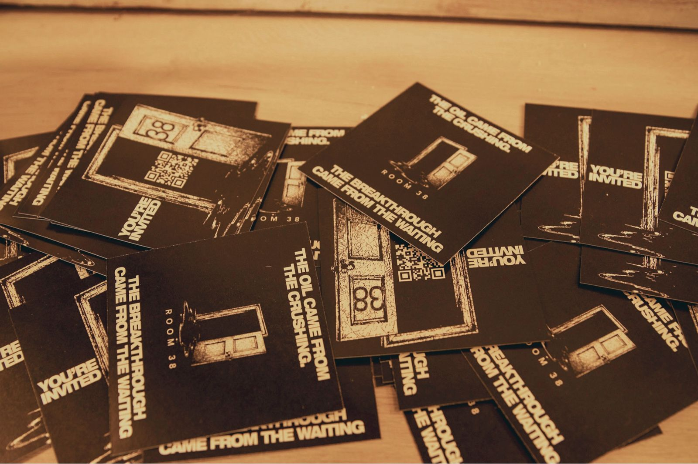
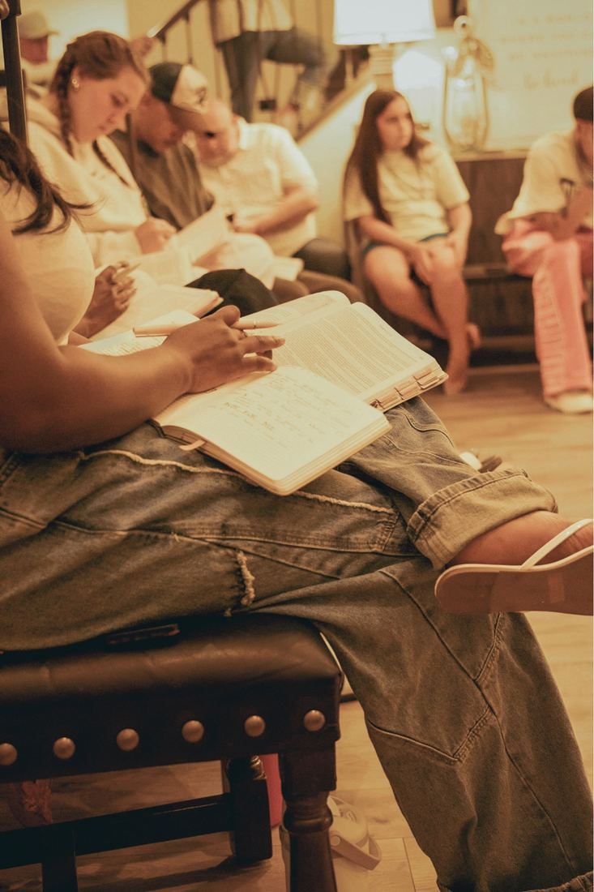
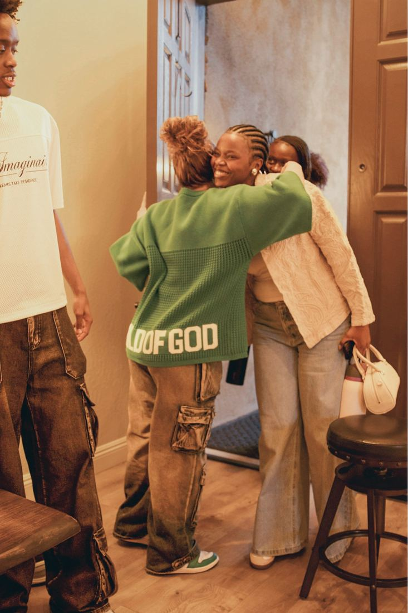
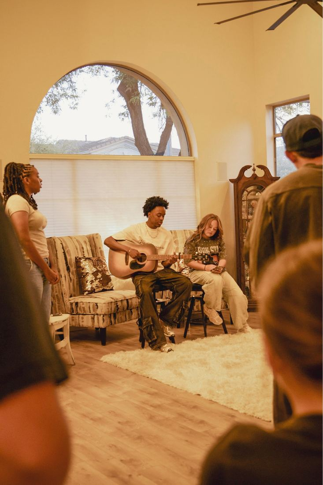
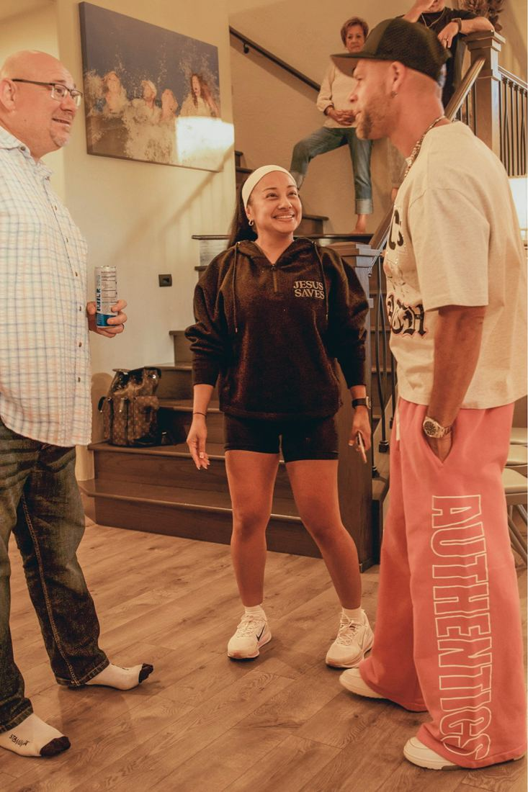
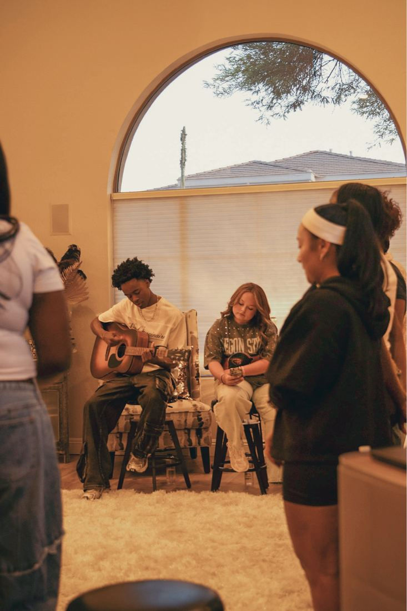
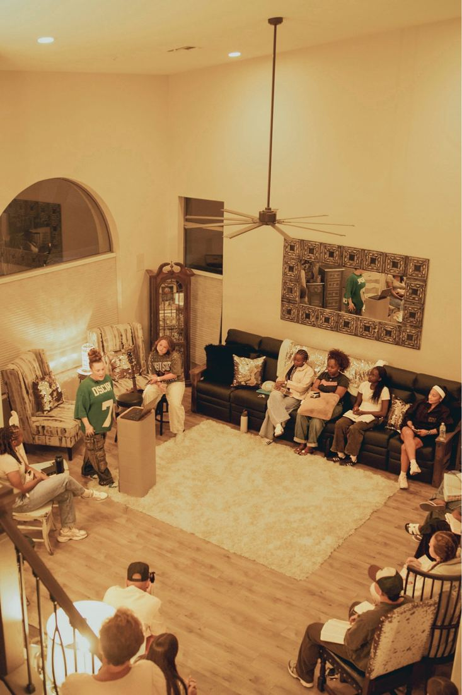
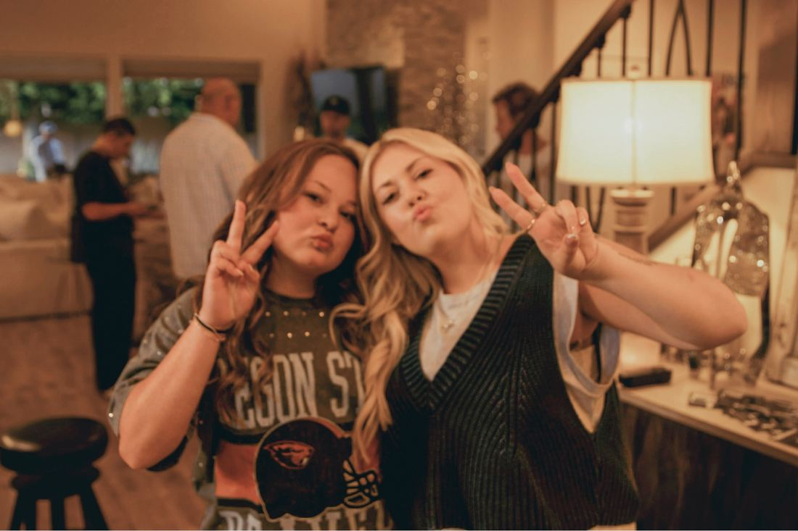

Room 38 — The Table

Come carrying the season you're in and leave transformed by the God who turns pressure into purpose and crushing into overflow.
- Gathering
- Mon · 7:00 PM
- Built on
- Presence
- Open to
- Anyone
The Vision
A space where people encounter God deeply, find healing, and build community authentically.
The number 38 marks two moments in Scripture: one of waiting in the wilderness, one of healing after years of being stuck. We believe God does some of His deepest work in seasons that feel hidden, delayed, or crushing. Just like oil is produced under pressure, He produces purpose, intimacy, and anointing in the places we least expected.
Room 38 is not built around performance. It is built around presence.
-
i.
Worship
We create space to encounter God.
-
ii.
Teaching
We make room for truth to transform us.
-
iii.
Community
We remind people they were never meant to walk alone.
Room 38 was born from seasons of crushing, prayer, surrender, and deep encounters with the presence of God. My prayer is that every person who walks through these doors would feel seen, safe, loved, and welcomed into His presence.
This Room Is For
People in the in-between.
- 01
People leaving wilderness seasons
- 02
People carrying questions
- 03
People desperate for more of God
- 04
People looking for healing
- 05
People learning to encounter Jesus personally
We believe waiting is not wasted.
We believe crushing can produce oil.
We believe healing still happens.
And we believe one encounter with Jesus can change everything.
Psalm 23:5
You prepare a table before me
in the presence of my enemies.
You anoint my head with oil;
my cup overflows.
Why a Table
Not just another gathering. A home.
Room 38 was never meant to be just another gathering. It was meant to feel like home. Around a table, people are seen, welcomed, fed, heard, and loved. The table is a place where every person, no matter their story or season, has a seat.
Before someone encounters the message, they encounter the atmosphere. We come ready to set the table, prepare the space, hold the door open, and make room for the presence of God.
Week One · 05/26
The first night around the table.
On Monday, the door opened and the table filled. Worship, the Word, real conversation, and a room full of people choosing to show up. We carry that night into every Monday that follows.

-

-

-

-

-

-

-

Table Values
How we carry the house.
-
01
Presence over performance
We are not here to impress people. We are here to host the presence of God authentically.
-
02
People over perfection
Every person who walks through the door matters. We choose love, grace, and hospitality over appearances.
-
03
We set the atmosphere
We help create an environment where people feel safe, welcomed, and open to encountering God.
-
04
We carry oil
Intimacy with God off the platform matters more than appearances on it. We cannot pour out what we have not first received.
-
05
We lead with humility
No role is too small. We serve with joy, flexibility, and honor because every detail matters in building the house.
Worship Sessions
The songs we sing around the table.
A living playlist of the worship that shapes our gatherings: what we sing on Monday nights, what we play in the kitchen, and what carries us into His presence between rooms.
What to Expect
Your first night, simply.
If it's your first time, here's the rhythm of a Monday. You don't need to dress up, know anyone, or have it all figured out. Come as you are.
-
01
Arrive
Doors open a few minutes before 7. We share the address with you once your RSVP is in. Park, walk up, breathe. Someone will meet you at the door.
-
02
Settle in
Grab water or coffee, find a seat, meet a few faces. There's no sign-in, no nametags, no spotlight on the new person.
-
03
Worship & Word
We worship together, open the Bible, and walk through a passage with room for questions. Nothing is rushed.
-
04
Around the table
We gather, talk honestly about what God is doing, pray for each other, and wrap up by around 9. You're welcome to linger.
What to bring
A Bible (any translation; a phone is fine) and the season you're in. That's it. You don't have to bring food, an answer, or a polished version of yourself.
A note for first-timers
You don't have to know the Bible well. You don't have to be sure about God. You don't have to come with a friend. There is room at this table for honest questions and quiet seasons.
FAQ
The honest questions.
Practical answers for first-time guests. Anything missing? DM us on Instagram and we'll add it.
-
Can I come alone?
Yes. Most people do their first time. You'll be welcomed at the door and introduced to a few people at your pace. No spotlight, no pressure.
-
Where does Room 38 meet?
We meet in a home in the Phoenix/Scottsdale area. To honor the privacy of the people who host, we share the exact address by email after you RSVP. The space is warm, quiet, and easy to find once you have the details.
-
Do I need to know the Bible well?
Not at all. People walk in with every level of background, from "I grew up in church" to "I've never opened a Bible." We read together, ask real questions, and explain context as we go.
-
Can I invite a friend?
Please do. Ask them to fill out the same RSVP so we can hold a seat and send them the address. The table grows by invitation.
-
What happens after I RSVP?
You'll get a confirmation from us with the address, parking notes, and what to expect. If anything changes (date, location, weather), we'll let you know before Monday.
-
What should I bring?
A Bible (any translation; the Bible app on your phone is fine) and an open heart. You're welcome to bring a friend, a journal, or nothing at all.
-
How long does it last?
We start at 7:00 PM and usually wrap up by 9:00 PM. You're welcome to linger afterward or head out as soon as we close.
-
Is it kid-friendly?
Room 38 is built for teens and adults at the moment. If you have questions about bringing kids, DM us on Instagram and we'll talk through it.
Details
When & how we gather.
-
When
Mondays at 7:00 PM
-
Where
Address shared with confirmed guests after RSVP.
-
Format
Worship, teaching from the Word, and time around the table together.
-
Bring
A Bible (any translation) and the season you're in. That's enough.
Apple/iCal downloads a recurring weekly invite (Mondays, 7–9 PM). Google opens in a new tab with the event prefilled.
Save Your Seat
There's a seat for you at the table.
A few quick questions so we can hold a seat, share the address, and welcome you well before you arrive.
Hold a seat at the table
- Takes about 60 seconds
- Address shared after you RSVP
- Mondays at 7:00 PM, Phoenix/Scottsdale
Trouble with the popup? Open the form in a new tab →
Follow Along
Between gatherings, we share what God is saying.
Readings, reflections, and reminders that waiting is not wasted. Follow @officialroom38 on Instagram.
Follow on Instagram →